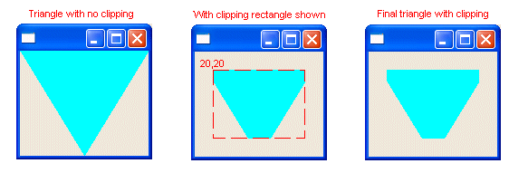
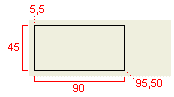
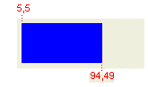
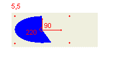
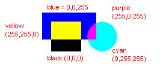

| Eclipse 文档中心（Eclipse Corner Article） |

摘要：
org.eclipse.swt.graphics包（package），包含了管理图形资源的类。只要实现了org.eclipse.swt.graphics.Drawable接口，就可在上面绘画，包括 org.eclipse.swt.widgets.Control 和 org.eclipse.swt.graphics.Image 。 org.eclipse.swt.graphics.GC封装了全部绘画API，包括如何绘制线条、图形、如何绘制文本、图像以及填充图形。 本篇将展示如何使用GC在图像上绘画， 控件的绘画事件（paintEvent）回调。画布（Canvas）控件，因为不同的绘画操作，拥有很多构造风格常量允许你指定何时以及如何产生绘画，本篇也将展示这些东西。
作者： Joe Winchester, IBM
2003年7月3日（July 3, 2003）
英文原文：Graphics Context - Quick on the draw http://www.eclipse.org/articles/Article-SWT-graphics/SWT_graphics.html
催月泪（Jaclick）翻译 Jaclick@gmail.com
2007.5.30
SWT图形系统使用了与控件（Control）相同的坐标习惯，即客户区最左上角开始的点为原点（0，0），x轴坐标向右增加，y轴坐标向下增加。Point 类被用于描述位置（坐标系统中的位置）以及偏移量（SWT中并没有Dimension类，矩形（rectangle）的大小是由Point类捕获的x、y坐标点偏移量到原点坐标来描述的）。
图形能够被画在任何实现了org.eclipse.swt.graphics.Drawable接口的东西上，比如控件（Control）、图像（Image）、显示设备或者打印设备。 org.eclipse.swt.graphics.GC 就是封装了执行绘画操作的图形上下文（graphics context）。一般有两种使用GC的方法：一种是让Drawable 实例作为GC构造函数的参数获取的GC，另外一种是绘画事件（paintEvent）回调提供的GC。
 从左上角顶点（0,0）处向右下角顶点画线条
从左上角顶点（0,0）处向右下角顶点画线条
 从右上角顶点向左下角顶点画线条。
从右上角顶点向左下角顶点画线条。
Image image = new Image(display,"C:/devEclipse_02/eclipse/plugins/org.eclipse.platform_2.0.2/eclipse_lg.gif");
GC gc = new GC(image);
Rectangle bounds = image.getBounds();
 gc.drawLine(0,0,bounds.width,bounds.height);
gc.drawLine(0,0,bounds.width,bounds.height);
 gc.drawLine(0,bounds.height,bounds.width,0);
gc.drawLine(0,bounds.height,bounds.width,0);
 gc.dispose();
gc.dispose();
image.dispose();
| 原始图像 | 绘制线条后的图像 |

|
 由你创建的GC，就得由你负责销毁它。调用
dispose（）方法。关于怎样管理 SWT 资源的更多信息请参见
SWT:
The Standard Widget Toolkit 。一个 GC
实例应该在使用完后就尽可能快的释放，这是因为每一个GC 都需要占用底层系统平台资源，而在某些操作系统平台中，这些资源是相当匮乏的，例如Windows
98仅仅提供了5个GC 对象。
由你创建的GC，就得由你负责销毁它。调用
dispose（）方法。关于怎样管理 SWT 资源的更多信息请参见
SWT:
The Standard Widget Toolkit 。一个 GC
实例应该在使用完后就尽可能快的释放，这是因为每一个GC 都需要占用底层系统平台资源，而在某些操作系统平台中，这些资源是相当匮乏的，例如Windows
98仅仅提供了5个GC 对象。
org.eclipse.swt.widgets.Control 实现了Drawable接口，所以你可以在控件（Control）上绘画，图像(Image)上绘画方法与控件相同(把控件或图像作为参数传给GC获取控件或图像的GC，然后在其上进行绘画)。但是，图像（Image）上的绘画与控件有所不同是图像的修改是永恒不变的。如果使用GC在控件上进行绘画，操作系统自身在绘制控件时会覆盖你所做的绘画操作。正确的方法的是为控件添加一个绘画监听器，这个监听器类就是org.eclipse.swt.events.PaintListener，然后在监听器中回调方法参数就是org.eclipse.swt.events.PaintEvent的一个实例。PaintEvent 包含了一GC，这样在控件上面或者是指定区域里面进行绘画的环境就准备好了
以下代码
 给Shell添加了一个绘画监听，
给Shell添加了一个绘画监听， 然后在paintControl（）方法中画一条连接原点到底部右下角的直线。
然后在paintControl（）方法中画一条连接原点到底部右下角的直线。
Shell shell = new Shell(display);
 shell.addPaintListener(new PaintListener(){
shell.addPaintListener(new PaintListener(){
public void paintControl(PaintEvent e){
Rectangle clientArea = shell.getClientArea();
 e.gc.drawLine(0,0,clientArea.width,clientArea.height);
e.gc.drawLine(0,0,clientArea.width,clientArea.height);
}
});
shell.setSize(150,150)

虽然Shell的大小设置为（150,150）, 但实际上可绘画的区域比这还要再小一些，因为Shell还包括了边框、工具栏以及菜单栏，这也就是我们所要了解的客户区域。任何面板（Composite）都是使用getClientArea()方法获取客户区域的。
因为应用程序总是在底层OS绘制完控件后才得到绘画事件，所以绘画事件中的GC进行绘画后的效果就可以最终显示在控件上面了。当然也有例外，比如工具栏区域就不能在上面进行绘画。org.eclipse.swt.widgets.Canvas
能够用来进行多方面的图形绘画操作。
一个GC的剪切区域就是发生绘画的那部分，这里有个例子，如果你要填充出一个有缺口的三角形形状，一种方法是画出多个三角形和矩形组合出这么一个形状；当然也有另一种方法，就是利用GC的剪切操作。
shell.addPaintListener(new PaintListener() {
public void paintControl(PaintEvent e) {
Rectangle clientArea = shell.getClientArea();
int width = clientArea.width;
int height = clientArea.height;
 e.gc.setClipping(20,20,width - 40, height - 40);
e.gc.setClipping(20,20,width - 40, height - 40);
e.gc.setBackground(display.getSystemColor(SWT.COLOR_CYAN));
 e.gc.fillPolygon(new int[] {0,0,width,0,width/2,height});
e.gc.fillPolygon(new int[] {0,0,width,0,width/2,height});
}
});
这段代码在Shell上画了一个三角形。 左上角和右上角连接到底部边缘的中间。使用一个矩形CG对其进行剪切。
左上角和右上角连接到底部边缘的中间。使用一个矩形CG对其进行剪切。 最后显示出被剪切的矩形区域。
最后显示出被剪切的矩形区域。

当控件发生绘画事件，GC总是剪切需要重绘的那部分区域。例如，另一个窗口移到了一个SWT
shell的前面，随后又移走。那么需要重新显示的就是GUI被损坏的那部分（shell被覆盖的那部分），一个绘画事件就是事件队列。当绘画事件发生，paintControl(PaintEvent evt) 方法中的参数就包含了控件中需要的重绘区域的x、y坐标字段及宽和高字段。控件的受损部分能够包含若干个相分离的矩形区域，当绘画事件发生，控件的受损部分不止一个时，那么它们就会被合并成一个单一的矩形。这一步是由底层平台来实现的，因为多个绘画事件在单独的一个回调过程中处理有利于执行。
在上面的例子中每当 paintControl(PaintEvent)被调用的时候， 就将在PaintEvent's area中寻找一个优化。绘画事件（paint event）很可能不交叉在绘画的形状（shape）中，在这种情况下，就不需要绘画（painting）或者指使需要一部分重画而已。依靠绘画的类型，就可以解决GC所选择的绘画部分，但事实上这要比GC剪切花费更多开销，而且在实践中常常忽视这些被损坏的区域让GC重新绘画全部，只有在刷新操作中才会依赖剪切。
如果程序需要手工损坏控件的某部分区域，可以使用Control.redraw(int x, int y, int width, int height)或者使用Control.redraw()损坏整个客户区域。此区域就被打上了标记然后包含在下一个绘画事件中，产生闪屏后，就会立即使用Control.update()方法强制处理控件的绘画请求。如果无绘画请求（也就是客户区域无损坏）, update()就什么不做。
（译者注：此处的Control并不单指Control类，而是指所有继承了Control类的控件类，比如button,canvas,shell等等）
虽然任何控件都可以通过绘画事件（paintEvent）在其上进行绘制, 但是org.eclipse.swt.widgets.Canvas 是针对图形操作而特别设计的。可以直接使用Canvas，也可以通过添加绘画事件（paintEvent）使用，还可以创建Canvas的子类来自定义控件重复使用之。画布（Canvas）拥有大量的风格样式来影响绘画的产生。
Canvas的默认行为是使用当前背景色填充自身的整个客户区域。这样会引起屏闪，因为绘画事件也是在GC上绘画，所以用户就会看到被填充的原始背景色和产生绘画之间的闪烁。有一种方法可避免此类情况，在创建Canvas时使用SWT.NO_BACKGROUND样式。这样就防止了绘画背景，意思就是程序要负责绘画客户区域的每一个像素。
当部件调整大小时，客户区域会重复绘画，这就会出现屏幕闪烁。使用SWT.NO_REDRAW_RESIZE 可减少这样的情况，控件会减少不必要的重绘。比如改变尺寸大小，绘画事件GC只会剪切需要重绘的部分即底部区域和右边区域，就像一个反方向的“L”。
在固定大小的GC上绘画NO-REDRAW_RESIZE样式能很好的减少屏闪。但是错误的使用NO_REDRAW_RESIZE 可以导致图形成扁圆形。扁圆形是个大概的说法，事实上是指部件没有随大小的调整而进行正确的更新。下面的例子就演示了这样的情况。 填充椭圆形。因为在窗口大小改变时没有产生绘画事件，因为GC只剪切受损的（发生改变的）区域，而上一个绘画又没有被抹去，这就产生了扁圆形状。( 即使用NO_REDRAW_RESIZE 绘画事件只处理扩大的那部分区域，原先部分它就不管了).
填充椭圆形。因为在窗口大小改变时没有产生绘画事件，因为GC只剪切受损的（发生改变的）区域，而上一个绘画又没有被抹去，这就产生了扁圆形状。( 即使用NO_REDRAW_RESIZE 绘画事件只处理扩大的那部分区域，原先部分它就不管了).
shell.setLayout(new FillLayout());  final Canvas canvas = new Canvas(shell,SWT.NO_REDRAW_RESIZE);
final Canvas canvas = new Canvas(shell,SWT.NO_REDRAW_RESIZE);
canvas.addPaintListener(new PaintListener() { public void paintControl(PaintEvent e) { Rectangle clientArea = canvas.getClientArea(); e.gc.setBackground(display.getSystemColor(SWT.COLOR_CYAN));  e.gc.fillOval(0,0,clientArea.width,clientArea.height);
e.gc.fillOval(0,0,clientArea.width,clientArea.height); } });
canvas的大小被增大，GC只剪切需要重绘的地方，扁圆形状就产生了。

问题出在 ，应该使用SWT.NONE 样式，这样GC就不会只剪切扩大的部分了。所以当Shell大小增大时整个椭圆形都会被重绘。
 final Canvas canvas = new Canvas(shell,SWT.NONE);
final Canvas canvas = new Canvas(shell,SWT.NONE);
任何SWT部件，如果超过一个矩形区域被“损坏”，平台会把它们合并成一个，也就是说SWT程序只能处理一个绘画事件。在Canvas上使用NO_MERGE_PAINTS 样式可以覆盖这样的行为，可以为每一个被“损坏”的矩形区域调用绘画事件监听。
风格常量NO_BACKGROUND, NO_REDRAW_RESIZE 以及NO_MERGE_PAINTS 能够被使用在任何面板（Composite）以及子类中, 包括Canvas、Shell以及Group。 虽然这是被SWT允许的（不会由异常抛出），但在Composite 类的Javadoc中关于风格有这样的警告 "... 如果在其他的Composite子类中（除了Canvas）使用其行为是不明确的。"。所以实现图形绘画操作Canvas应该是首选。
另一种减少屏幕闪烁的方法，就是使用双缓冲技术。你可以先根据Canvas客户区域大小创建Image对象，然后使用GC(Image)将其绘画到Canvas上; 在绘画事件GC中调用drawImage(Image image, int x, int y)。 在一些平台上已经为你实现了双缓冲，所以你可以根据情况考虑使用三缓冲。
绘制线条和形状（Drawing lines and shapes）
GC 拥有很多绘画线条的方法，比如画连接两个坐标点的直线、连接多个坐标点的直线或者是预先定义好的形状，线条颜色就是GC的前景色，可以通过风格样式常量来决定线条的粗细胖瘦。绘画事件其GC也有很多相同的属性（前景色、背景色、以及颜色），并且线条的默认宽度是1像素。GC.drawLine(int x1, int y1, int x2, int y2); GC.drawPolyline(int[] pointArray); 画一条连接多个坐标点的直线，int[] 存放着要连接的x、y坐标值。代码如下:
gc.drawPolyline(new int[] { 25,5,45,45,5,45 });
先是从坐标点25,5到45,45，然后从45,45到5,45。

GC.drawPolygon(int[] pointArray); drawPolyline(int[])的使用与gc.drawPolyline很相似，不同的是最后一个点（5,45）连接了第一个点（25,5）。
gc.drawPolygon(new int[] { 25,5,45,45,5,45 });
相当于用三条线段链接三角形的单个端点，从而形成了一个三角形区域。

GC.drawRectangle(int x, int y, int width, int height); 画一个矩形区域，int x,int y是矩形左上角的坐标点，int width,int heighy分别是矩形的宽和高。
gc.drawRectangle(5,5,90,45);
左上角坐标点为（5,5），对角坐标点为（95，50）。

你可以将Rectangle作为一个单独的参数传送给绘画方法。GC.drawRectangle(Rectangle);
GC.drawRoundedRectangle(int x, int y, int width, int height, int arcWidth, int arcHeight); 圆角矩形不同于标准矩形，它的四角呈圆形。每一个圆角实际上就是一个1/4的椭圆形，其弧宽和弧高就是完整椭圆形的宽和高。
gc.drawRoundedRectangle(5,5,90,45,25,15)
画了一个圆角矩形，左顶角坐标值（5,5）。下面是圆角矩形的右下角放大图，其宽和高分别是25、15。

虽然调用4次drawArc()和4次drawLine()完全可以实现一个圆角矩形。但在一些平台下，例如Windows或者Photon，SWT就可以使用非常优秀的平台API。
GC.drawOval(int x, int y, int width, int height);
一个椭圆形是画在矩形里的，所以由矩形的左顶点坐标以及宽和高来定义。定义一个正圆形同样使用这个方法。
gc.drawOval(5,5,90,45);

GC.drawArc(int x, int y, int width, int height, int startAngle, int endAngle);一个弧形是被画在一个指明了高和宽以及左顶角x,y坐标的矩形区域内。int startAngle是个角度，是开始画弧形的位置，开始点就是此角度与X轴坐标线相交的那个点。int endAngle同样是角度，它是弧形结束的位置，道理和int startAngle相同。
gc.drawArc(5,5,90,45,90,200);
这里画了一个弧形，从90度垂线和X轴坐标相交处开始，然后持续画200度。
GC.setLineStyle(int style);org.eclipse.swt.SWT中提供了定义线条风格的常量，这些线条风格常量以LINE_开头。 | SWT.LINE_SOLID | |
| SWT.LINE_DOT | |
| SWT.LINE_DASH |  |
| SWT.LINE_DASHDOT |  |
| SWT.LINE_DASHDOTDOT |
GC.setLineWidth(int width);| gc.setLineWidth(2); |  |
| gc.setLineWidth(4); |  |
因为线条风格影响着所有的绘画操作，所以这也就使你可以画出不同边线风格的矩形或椭圆等图形。
gc.setLineWidth(3); gc.drawOval(5,5,40,40); gc.setLineWidth(1); gc.setLineStyle(SWT.LINE_DOT); gc.setForeground(display.getSystemColor(SWT.COLOR_BLUE)); gc.drawRectangle(60,5,60,40);
当GC的属性被改变，比如像线条的宽度、线条的风格或者是颜色，这些变化都会影响到后续的绘画操作。以上代码片段中，首先设置线条的宽度为3画了一个椭圆，随后重新设置线条属性画了一个边线是虚线的矩形。在SWT图形编程中，忘记重新设置这些字段属性的值是经常会犯的错误。
绘制文本（Drawing text）
GC之上同样可以绘制文本，文字的轮廓可通过GC的foreground color和font确定。你需要定义它的左上角坐标（就是字体的位置）以及字体的高和宽。绘制文本有两种设置方法：第一种是在drawText（）绘制方法里直接输入文本它将处理行分隔符和tabs制表符，常用来模仿一个Label。第二种是在drawString（）绘制方法中输入字符串，没有tab以及回车处理，常用于更加复杂的控件，就像StyledText常用于Eclipse Java editor那样。
GC.drawText(String text, int x, int y);Font font = new Font(display,"Arial",14,SWT.BOLD | SWT.ITALIC); // ... gc.drawText("Hello World",5,5); gc.setForeground(display.getSystemColor(SWT.COLOR_BLUE)); gc.setFont(font); gc.drawText("Hello\tThere\nWide\tWorld",5,25); // ... font.dispose();
drawText API 支持控制转义字符，\t 就是tab，\n就是回车换行。
GC.drawString(String text, int x, int y);Font font = new Font(display,"Arial",14,SWT.BOLD | SWT.ITALIC); // ... gc.drawString("Hello World",5,5); gc.setForeground(display.getSystemColor(SWT.COLOR_BLUE)); gc.setFont(font); gc.drawString("Hello\tThere\nWide\tWorld",5,25); // ... font.dispose()
使用drawString时，tab 和回车换行转义字符没有被处理。在GC绘制时字符串所占的大小基于它的内容和GC所设置的字体。获取字符串所占宽度可以分别使用GC.stringExtent(String text)和GC.textExtent(String text)这两个方法。 它们所返回的Point的x,y坐标值分别就是宽和高。
GC.drawText(String text, int x, int y, boolean isTransparent);
drawText(String text, int x, int y)绘制的文本使用的是GC的当前foreground color。当你希望文本透过背景色在最顶层显示的画，你可设置它的isTransparent这个布尔型的参数为true。此方法在图像（image）上绘制时特别有用。
Font font = new Font(display,"Arial",12,SWT.BOLD | SWT.ITALIC); Image image = new Image(display,"C:/devEclipse_02/eclipse/plugins/org.eclipse.platform_2.0.2/eclipse_lg.gif"); GC gc = new GC(image); gc.drawText("Hello World",5,5); gc.setFont(font); gc.setForeground(display.getSystemColor(SWT.COLOR_WHITE)); gc.drawText("Hello World",5,25,true); gc.dispose(); image.dispose(); font.dispose();

GC.drawText(String text, int x, int y, int flags);
gc.drawImage(image,0,0); gc.drawText("Hello\t&There\nWide\tWorld",5,5,SWT.DRAW_TRANSPARENT); gc.drawText("Hello\t&There\nWide\tWorld",5,25,SWT.DRAW_DELIMITER | SWT.DRAW_TAB | SWT.DRAW_MNEMONIC );

GC.fillPolygon(int[]);gc.setBackground(display.getSystemColor(SWT.COLOR_BLUE)); gc.fillPolygon(new int[] { 25,5,45,45,5,45 }) 
GC.fillRectangle(int x, int y, int width, int height);gc.fillRectangle(5,5,90,45);

填充矩形的时候，底部边线和右边线是不包含在内的。虽然点（5,5）被包含在填充矩形的代码中，但右下角点 95,50 (5+90 , 45+5) 不在填充区域的范围里，右下角的填充点是94,49。这不同于drawRectangle(5,5,90,45)，drawRectangle指的是整个形状，所以其右下角点是95,50。
举例说明一下，下面的代码填充了一个矩形，但是填充的颜色并没有覆盖边线。填充区域的右上角点坐标以及宽和高都减小了1像素。
gc.drawRectangle(5,5,90,45); gc.setBackground(display.getSystemColor(SWT.COLOR_CYAN)); gc.fillRectangle(6,6,89,44);
GC.fillRoundedRectangle(int x, int y, int width, int height, int arcWidth, int arcHeight);gc.fillRoundRectangle(5,5,90,45,25,15);

有点像 GC.fillRectangle(...)方法。底部边框和右边框都被排除在填充范围之内，所以底部右下角坐标变成了（94，49）而不是（95，50）
GC.fillOval(int x, int y, int width, int height);
gc.fillOval(5,5,90,45);
与其他的填充APIs相似
GC.fillArc(int x, int y, int widt4h., int height, int startAngle, int endAngle);
gc.fillArc(5,5,90,45,90,200);

fillArc(...) 方法中的参数和drawArc(...)中的参数很相似。fillArc(...)遵守着和其他填充方法一样的模式，底部边框和右边框不在填充范围之内。
GC.fillGradientRectangle(int x, int y, int width. int height, vertical boolean);
对矩形进行由前景色到背景色的渐变填充。Vertical为true表示垂直渐变，反之则表示水平渐变。
gc.setBackgrouind(display,getSystemColor(SWT.COLOR_BLUE)); gc.fillGradientRectangle(5,5,90,45,false);
水平渐变从左边的黑色前景色开始向右边蓝色背景色变化。正如其他的填充方法，底部和右边框是被排除在外的，所以底部右下角会由1像素插入。

gc.setBackground(display.getSystemColor(SWT.COLOR_BLUE)); gc.setForeground(display.getSystemColor(SWT.COLOR_CYAN)); gc.fillGradientRectangle(5,5,90,45,true);
垂直渐变从上而下，由前景色向背景色变化。

shell.setBackground(display.getSystemColor(SWT.COLOR_WHITE)); // ... gc.setBackground(display.getSystemColor(SWT.COLOR_BLUE)); gc.fillRectangle(5,5,90,45); gc.setXORMode(true); gc.setBackground(display.getSystemColor(SWT.COLOR_WHITE)); gc.fillRectangle(20,20,50,50); gc.setBackground(display.getSystemColor(SWT.COLOR_RED)); gc.fillOval(80,20,50,50);

被填充的背景色是白色的（255,255,255）矩形，当在上面覆盖一层蓝色（0,0,255），或（XOR）后的颜色就是黄色（25,255,0）。白背景的部分和黄色异或后就成了黑色（0,0,0）。一个红色背景的圆，它覆盖在蓝色上面异或（XOR）后就成了紫色（255,0,255）。盖在白色上面异或（XOR）后就成了青色（0,255,255）。
（译者注： SWT API帮助文档中对setXORMode（）方法是这样描述的“此方法在某些平台下是不被支持的，显著表现的有Mac OS X，如果你希望你的代码可运行在所有平台，应该尽量避免使用此方法。”）
org.eclipse.swt.graphics.Image
Image image = new Image(display,"C:/eclipse/eclipse/plugins/org.eclipse.platform_2.0.2/eclipse_lg.gif");
GC.drawImage(Image image, int x, int y);eclipse_lg.gif的大小就是115,164 ，可以使用image.getBounds()获取。当绘画了一个图像，此图像就会以它自身范围的宽度和高度显示出来。
gc.drawImage(image,5,5);

GC.drawImage(Image image, int srcX, int srcY, int srcWidth, int srcHeight, int dstX, int dstY, int dstWidth, int dstHeight);根据原始图像的宽度和高度，不但可以绘画出不同大小的图像还可以只绘画原始图像的局部。
src 参数联系图像本身，要画完整的图像，srcX、srcY 使用0,0，宽高就使用图像的宽高。dst 参数表示图像被画在哪里以及画成多大。原始图像的大小是115,164，若要把图像宽度增加2倍，高度减低一半，可以使用下面的语句：
gc.drawImage(image,0,0,115,164,5,5,230,82);

使用src坐标可以使你只画出图像的局部。例如，如果你只想画出图像的右上角部分，你可以设定src坐标为20,0，宽度和高度为95，82。下面的代码中dst 宽度和高度同样使用95,82。通过指定不同大小就可以对图像进行拉长或收缩操作。
gc.drawImage(image,20,0,95,82,5,5,95,82);
还能完成一些其他的图像效果，比如图像透明度、animation以及alpha通道。但这些不属于本篇的讨论范围，我希望在以后的文章中能够涉及到这些东西。